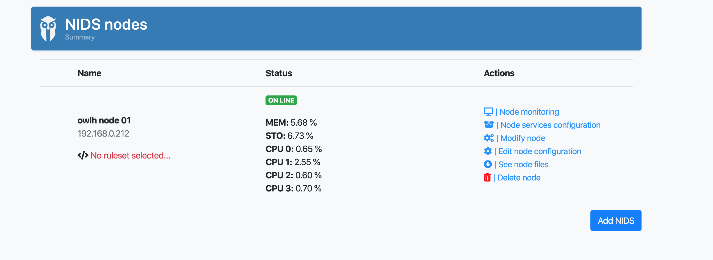

install owlh node¶
- install with installer
- service config
- install suricata
- install zeek
- install wazuh
- install owlh interface
- install software tap related packets
- configure your firewall
- register node in master and configure
How to install OwlH Node¶
Important
First, be sure you will have your OwlH Master ready. And your OwlH UI pointing to your OwlH Master.
Ready?
Download and prepare OwlH Installer¶
| OS version | URL |
|---|---|
| CentOS 7 | wget http://repo.owlh.net/current-centos/owlhinstaller.tar.gz |
| Ubuntu | wget http://repo.owlh.net/current-debian/owlhinstaller.tar.gz |
| Raspbian | wget http://repo.owlh.net/current-arm/owlhinstaller.tar.gz |
Now let’s install it.
# mkdir /tmp/owlhinstaller
# tar -C /tmp/owlhinstaller -xvf owlhinstaller.tar.gz
We are almost done. In order to allow OwlH installer to do its work, we need to tell it what is/are out target/s for this box. A target is an OwlH component that must be installed or updated. All this info is provided in the config.json file included in the owlhinstaller folder
Note
Right now, our target is “owlhnode”, our action is “install”
Important
{
...
"tmpfolder":"/tmp/",
"action": "install", <===
"repourl":"http://repo.owlh.net/current-centos/", <=== choose your right repo (current-centos, current-debian, current-arm)
"target": [
"owlhnode" <===
],
"masterfiles":[
...
}
Attention
you can change your installation paths as needed. Changing default paths may need further paths change for some configurations like service init files. If you are not familiar with it, keep defaults until it is really needed or ask for help.
Install OwlH Node¶
# cd /tmp/owlhinstaller
# ./owlhinstaller
for systemd:
# cp /usr/local/owlh/src/owlhnode/conf/service/owlhnode.service /etc/systemd/system
# systemctl daemon-reload
# systemctl enable owlhnode
# systemctl start owlhnode
Check if your OwlH Node is running¶
check owlhnode logs
# tail -f /var/log/owlh/owlhnode-api.log
check owlhnode process is running
# systemctl status owlhnode.service
# ps -ef | grep owlhnode
check if owlhnode service port is listening
# netstat -nputa | grep 50002
Register your new node in your OwlH Master¶
You will need:
OwlH node name
OwlH node ip
OwlH node port
Go to your OwlH master console -> nodes -> Add NIDS and introduce the right values
Modify your OwlH Installer configuration to keep your system uptodate¶
Note
Right now, our target is “owlhnode”, our action is “update”.
modify your config.json file to set action as “update”.
...
"tmpfolder":"/tmp/",
"action": "update", <===
"repourl":"http://repo.owlh.net/current-centos/", <=== choose your right repo
"target": [
"owlhnode" <===
],
...
You can add owlhinstaller to your crontab for an automatic update of your platform. following lines will move OwlH installer and create cron job. Please change as needed.
Note
While this is recommended, it is not mandatory. you can run your OwlH Installer manually as per your needs
# mkdir /usr/local/owlh/src/owlhinstaller
# cp /tmp/owlhinstaller/* /usr/local/owlh/src/owlhinstaller/
# (crontab -l ; echo "0 0 * * * /usr/local/owlh/src/owlhinstaller/owlhinstaller ") | crontab -